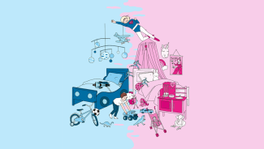

Emma Watson, an important feminist icon

Born on April 15, 1990, Emma Watson, committed actress and UN Women Goodwill Ambassador, is now an important figure in feminism.
Read also

High schools open to women

Feminism officially appeared in the French language from 1837. It is a fairly sensitive subject aimed at expanding the rights as well as the role of women. Education therefore has a very important role in feminism because a woman without culture, without education, will never be able to stand on an equal footing with a man.
School for all, a step towards equality
The education of women has evolved a lot from the 18th to the 21st centuries. In fact, in the 18th century, teaching was forbidden to women, which had the consequence that they could not read, write or count. At that time, women stayed at home because they were prohibited from going to high school. In the 19th century, women were reduced to staying at home, their role was to be mothers, wives. They were the ones who took care of life at home, their children, their husbands, they lived only for their family circle. It was strictly forbidden for a woman to receive, to attend a science course because at the time, it was frowned upon for a woman to be smarter than a man. For a long time women were belittled by men because they were considered inferior. It was not until 1850 that education became authorized for women with the “Falloux law”, then it was a little later in 1882 that gender equality in education was recognized with the “Ferry law”. ”
The place of women at the time
Women play a vital role in our society, to overcome the challenges we face today. However, this has not always been the case. In ancient times, a myth has endured saying that the woman was not created at the same time as the man, but from the man.
Housewife in time

It is on this myth that men have forged a vision of women: "Woman owes everything to man, she is subject to him", but she is also the symbol of the unhappiness of mankind. Until the 18th century, women remained excluded from civic rights, their right to vote was not even raised during debates. By men, they are not considered as real individuals, they are intended for domestic tasks, mothers, housewives, far from all these social functions of which some dream so much.
To learn more about the history of women's education, click on the button to join the frieze

Stéréotypes et discriminations, un combat sans fin
Parity in access to education dates back only a few generations, but equality between men and women remains unachieved. Indeed, despite this progress, this advance towards equality in recent years, women are still victims of stereotypes and discrimination compared to men. Gender stereotypes are an obstacle to establishing true equality between men and women, they are in a way "brakes". Simply put, gender stereotypes can hinder the development of natural intellectual abilities in girls and even boys. They can also affect their experiences in school, work and even their life chances in general. However, women are victimized by these stereotypes by men to maintain their historical "dominance" over them and also prevent them from advancing, climbing the ladder.
Gender stereotypes
We can conclude that women's right to education has evolved a lot over the centuries. Women today have managed to gain access to schools, so they can educate themselves and integrate into our predominantly male-led society. However, there are still stereotypes and discriminations that prevent some women from developing to their full potential.

Read also